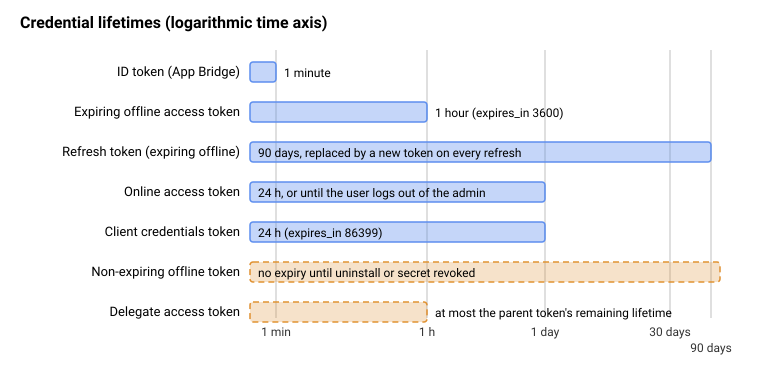

Authentication and Access Scopes
|
This content was generated with the assistance of AI and should be verified against the official documentation before being relied on in production. |
This page was written against the GraphQL Admin API version 2026-10 (the latest stable version, released on 2026-10-01),
Shopify CLI 5.0.0, @shopify/shopify-app-react-router 4.0.0 (the public app template still depends on ^3.0.1),
@shopify/shopify-api 15.0.1 and @shopify/app-bridge-react 4.2.14, and checked on 2026-10-27. It applies to every
Shopify plan, because authentication belongs to the app and not to the merchant’s plan, with one exception that is
called out where it matters: the data a custom app created in the admin can read depends on the plan.
Every app that calls the GraphQL Admin API has to answer three questions on each request: which app is calling, which merchant approved it, and what is it allowed to do. This page covers the credentials that answer them (the client secret, the ID token, the access token and the refresh token), the grants that produce them (token exchange, authorization code grant and client credentials grant), how Shopify installs an app and records its scopes (managed installation), the lifetimes and the January 2027 deadline for expiring offline tokens, the access scopes that bound what a token can do, and the protected customer data review that gates personal data. It sits after the page on app scaffolding and before the pages on webhooks and the Admin GraphQL API, which use the tokens described here. The Pocket Coffee shop (Spanish and English storefronts, the Coffee Club group, the roast date badge and the "order placed" logger) is the running example: its companion app declares the scopes, exchanges tokens and logs orders.
Two terminology changes matter when reading older material. What Shopify called a session token is now an ID token;
the same JWT is documented under the new name, and App Bridge 2.0 and older guides still say session token. "Managed
pricing" and the Billing API changed names as well, but that is a billing topic. The REST Admin API and the
checkout.liquid page are legacy and are not repeated here.
This page was prepared without a Shopify account, so nothing here was executed against a real store, the Partner
Dashboard or the Dev Dashboard. What did run locally is listed in What was run and what was not: the
shopify.app.toml build, the GraphQL documents validated against the downloaded Admin 2026-10 schema, an ID token
validator, and a token endpoint client exercised against a local stand-in server.
The credentials and where each one lives
A Shopify app uses several different secrets, and most authentication bugs come from mixing them up. The table lists every credential that appears in this page, what it proves, how long it lives and where it must (and must not) go.
| Credential | What it proves | Lifetime | Where it lives |
|---|---|---|---|
Client ID |
Identifies the app. Public. It is the |
Until the app is deleted |
Frontend, TOML file, URLs |
Client secret |
Proves a request comes from the app. Signs and verifies ID tokens (HS256) and webhook HMACs. |
Until rotated (rotation invalidates tokens tied to the old secret) |
Backend secret store only. Never in a bundle, repository or log |
ID token |
A logged-in Shopify user is making this request from this store. Carries no permissions and cannot call any API. |
1 minute |
Browser to your backend, in the |
Offline access token |
The app may act on the store with the scopes the merchant approved, with no user session behind it. |
Expiring: 1 hour. Non-expiring: until uninstall or secret revoked |
Backend database, encrypted at rest, one record per shop |
Refresh token |
Lets the backend replace an expiring offline access token without a user. |
90 days, replaced on every use |
Backend database, same protection as the access token |
Online access token |
The same as an access token, narrowed to what one staff member may do. |
24 hours or until that user logs out of the admin |
Backend, keyed by shop and user |
Client credentials token |
The app acts as itself on a store in its own organization. |
24 hours ( |
Backend memory or cache |
Delegate access token |
A scoped-down copy of an offline token for one subsystem. |
Inherits the parent’s remaining lifetime or the shorter |
The subsystem that needs it only |
Offline and online access tokens are opaque strings that begin with shpat_, whichever grant produced them; delegate
access tokens begin with shppa_. Treat the prefix as a convenience for secret scanners and never as something to
parse. The Storefront API uses its own tokens (a public token and a private token with their own headers) and the
Customer Account API uses a customer OAuth flow; both are covered in
the Storefront and headless page. The Theme Access
password and the app automation token used in continuous integration are covered with the CLI workflows in
theme tooling and
deployment.
Source: Shopify: Access tokens
The request flow in one pass
For any app with a backend of its own, a GraphQL Admin API request goes through the same three steps, whatever the grant:
-
The app obtains an access token for the store it is calling.
-
The app sends it in the
X-Shopify-Access-Tokenheader on every request tohttps://<shop>.myshopify.com/admin/api/2026-10/graphql.json. -
Shopify returns the data that the token’s access scopes allow, or an error when the request fails one of the access requirements.
The access requirements are checked in order of how often they bite: a valid token; the scope the field names; for a
small number of scopes, Shopify’s approval of that scope for the app; for an online token, the staff member’s own
permissions (a request can be refused with ACCESS_DENIED even when the app holds the scope); and, for fields that
return personal data, the approval to use protected customer data.
An extension-only app has no backend, so it never holds a token. Shopify authenticates its requests through Direct API access, where App Bridge signs each call (see Online access tokens and per-user permissions).
The sequence below is the path of an embedded app built with the CLI, from the merchant clicking Install to the first GraphQL call and the refresh that follows. The numbered steps are referred to in the sections after it.
Choosing a grant
Shopify supports three grants. They all end at the same endpoint, POST https://<shop>.myshopify.com/admin/oauth/access_token,
and the token you get and the GraphQL calls you make with it are the same whichever grant produced it. Choose by where
the app runs and whose stores it acts on.
| If the app | Grant | Notes |
|---|---|---|
Runs embedded in the Shopify admin and was built with Shopify CLI |
Token exchange |
The template does it for you through |
Runs embedded in the admin without a Shopify template |
Token exchange |
Implement it yourself, or use an official library ( |
Runs outside the admin (standalone, API-only, non-embedded) |
Authorization code grant |
The merchant is redirected to Shopify to approve, then back with a code. The only case that still needs OAuth callback routes. |
Is a server-side integration for stores in your own organization |
Client credentials grant |
No install redirect and no merchant approval. Works only on stores in the developer’s organization. |
Is extension-only, with no backend |
None (Direct API access) |
Shopify authenticates the extension’s calls; there is no token to store. |
Every option except the client credentials grant works on any merchant’s store, including clients' stores. Apps that were created directly in the Shopify admin ("custom apps" from Settings, Apps and sales channels) get a pre-generated token when the merchant installs them; new apps of that kind can no longer be created, but existing ones keep working.
Shopify managed installation
Managed installation is how apps built with the CLI are installed: the scopes live in shopify.app.toml, and Shopify
itself shows the consent screen, installs the app and updates the granted scopes, without redirecting the merchant
through an OAuth URL that the app implements. The app is never called during installation, so there is no
/auth/callback route to write. This is why a CLI-built app does not implement the authorization code grant.
Declare the scopes and deploy:
# shopify.app.toml (Pocket Coffee companion app; placeholder identifiers)
client_id = "00000000000000000000000000000000"
name = "pocket-coffee-app"
handle = "pocket-coffee-app"
application_url = "https://app.example.com"
embedded = true
[access_scopes]
scopes = "write_products,read_inventory,read_orders,read_locales"
optional_scopes = ["read_customers", "read_all_orders"]
[auth]
redirect_urls = ["https://app.example.com/api/auth"]
[webhooks]
api_version = "2026-10"
[[webhooks.subscriptions]]
topics = ["app/uninstalled"]
uri = "/webhooks/app/uninstalled"
[[webhooks.subscriptions]]
topics = ["app/scopes_update"]
uri = "/webhooks/app/scopes_update"
[[webhooks.subscriptions]]
compliance_topics = ["customers/data_request", "customers/redact", "shop/redact"]
uri = "/webhooks/compliance"shopify app deploySource: Shopify: App configuration
The keys that matter for authentication are these:
| Key | Required | Meaning |
|---|---|---|
|
Yes |
The app’s public identifier. Placeholder here; a real value is created by linking the config to an app in the Dev Dashboard. |
|
Yes |
Where the embedded app is served. The App Bridge iframe loads it. |
|
Yes (boolean) |
|
|
Yes (comma-separated string) |
Scopes the merchant must grant at install. An empty string is allowed when every scope is optional. |
|
No (array of strings) |
Scopes the app may request later with the merchant’s consent. They are granted separately, after installation. |
|
No (boolean) |
|
|
Yes |
Redirect targets the app may use for authentication flows. |
|
No |
|
|
No (boolean) |
Enables calling the Admin API from the app frontend with |
|
No |
|
No |
|
What the install does, step by step:
-
The merchant clicks Install from the App Store listing, a custom distribution link or the Dev Dashboard install page. Shopify shows the scopes in
scopes(and says which are optional). -
The merchant approves. Shopify records the grant and associates the app with the shop. If the app asked for online access by default, the installing staff member must hold every required scope, or the installation fails.
-
Shopify opens the embedded app. The first request carries an ID token; the app exchanges it for its first access token. There is no separate "installation" call into the app.
-
When the developer changes
scopesand deploys, merchants who already have the app approve the new scopes the next time they open it. Reductions need no prompt: the app loses the scopes when the merchant next opens it. Theapp/scopes_updatewebhook fires when the merchant approves (or when the app is opened after a reduction).
Apps created in the Dev Dashboard without the CLI declare scopes on an app version instead; releasing the version
deploys them. Apps that implement the authorization code grant themselves pass a scope parameter on the
authorization URL. In every case the merchant approves new scopes.
The CLI validates this file offline. shopify app build --no-input accepted the file above and reported the app as
built; with scopes given as an array and optional_scopes given as a string it reported both mistakes without
contacting Shopify:
$ shopify app build --no-input
pocket-coffee-app built!
$ shopify app build --no-input (scopes = ["read_products"], optional_scopes = "read_customers")
[access_scopes.scopes]: Expected string, received array
[access_scopes.optional_scopes]: Expected array, received stringSource: Shopify: Manage access scopes
ID tokens (formerly session tokens)
An embedded app runs in an iframe in the admin, where third-party cookies are not reliably available, so it cannot keep a cookie session. Instead App Bridge issues an ID token: a short-lived JWT that proves a request comes from an authenticated Shopify user on a specific store. Apps embedded in the admin must authenticate with ID tokens, and Shopify’s automated app review checks that the app fetches one (an ad blocker can stop App Bridge from issuing it, which stalls that check).
An ID token authenticates the user, not the app. It carries no permissions and is never sent to a Shopify API: the backend validates it and exchanges it for an access token. It expires one minute after issue, so the frontend fetches a fresh one for each request instead of caching it; App Bridge may return a cached token that has less than the full minute left.
Getting and sending the token
The browser side is one call. In App Home use shopify.idToken(); in an admin UI extension use auth.idToken().
App Bridge’s fetch interceptor adds the token automatically to requests to the app’s own domain, so a plain fetch
from the app frontend already carries an Authorization: Bearer <id-token> header.
// public/app.js
const idToken = await shopify.idToken();
const response = await fetch('/exchange/offline', {
method: 'POST',
headers: { Authorization: `Bearer ${idToken}` },
});Call shopify.idToken() yourself only when a request does not go through fetch, for example to authenticate a
WebSocket connection to your backend. Send ID tokens to your own backend only: the signature can be verified only with
the client secret, so a third party could check it only if you gave it a credential that also lets it mint tokens your
app would accept, and the token is a bearer credential that can be replayed until it expires.
Claims to validate
App templates and the official libraries validate ID tokens for you. A custom backend verifies the HS256 signature with
the client secret and checks these claims, rejecting the request with 401 before calling the token endpoint when any
check fails:
| Claim | Check |
|---|---|
|
The expiry time must be in the future. |
|
The not-before time must be in the past. |
|
The audience must equal the app’s client ID. |
|
Their hostnames must match. |
|
The user the token was issued for (read, not validated). |
|
A session ID, unique per user and app (read, not validated). |
|
A random UUID for the token (read, not validated). |
|
When the token was issued (read, not validated). |
A decoded payload looks like this (all times are UNIX timestamps):
{
"iss": "https://exampleshop.myshopify.com/admin",
"dest": "https://exampleshop.myshopify.com",
"aud": "client-id-123",
"sub": "42",
"exp": 1591765058,
"nbf": 1591764998,
"iat": 1591764998,
"jti": "f8912129-1af6-4cad-9ca3-76b0f7621087",
"sid": "aaea182f2732d44c23057c0fea584021a4485b2bd25d3eb7fd349313ad24c685"
}Source: Shopify: ID tokens
A validator that runs
The module below implements exactly those checks with only node:crypto, using a constant-time signature comparison and
refusing any algorithm other than HS256. It also contains a helper that signs a test token, so it can be exercised
without Shopify. The client ID and secret are placeholders.
// id-token.mjs
import { createHmac, timingSafeEqual, randomUUID } from 'node:crypto';
const b64u = (buf) => Buffer.from(buf).toString('base64url');
export function validateIdToken(token, { clientId, clientSecret, now = Math.floor(Date.now() / 1000) }) {
const parts = token.split('.');
if (parts.length !== 3) throw new Error('not a JWT');
const [h, p, s] = parts;
const header = JSON.parse(Buffer.from(h, 'base64url').toString());
if (header.alg !== 'HS256') throw new Error(`unexpected alg ${header.alg}`);
const expected = createHmac('sha256', clientSecret).update(`${h}.${p}`).digest();
const given = Buffer.from(s, 'base64url');
if (given.length !== expected.length || !timingSafeEqual(given, expected)) throw new Error('bad signature');
const c = JSON.parse(Buffer.from(p, 'base64url').toString());
if (!(c.exp > now)) throw new Error('token expired (exp)');
if (!(c.nbf <= now)) throw new Error('token not yet valid (nbf)');
if (c.aud !== clientId) throw new Error('audience is not this app (aud)');
if (new URL(c.iss).hostname !== new URL(c.dest).hostname) throw new Error('iss and dest hosts differ');
return c;
}
// Test helper: signs a token shaped like the one App Bridge issues (placeholder secret only).
export function signIdToken(claims, secret) {
const h = b64u(JSON.stringify({ alg: 'HS256', typ: 'JWT' }));
const p = b64u(JSON.stringify(claims));
const s = b64u(createHmac('sha256', secret).update(`${h}.${p}`).digest());
return `${h}.${p}.${s}`;
}
export function sampleClaims(clientId, now = Math.floor(Date.now() / 1000)) {
return {
iss: 'https://pocket-coffee.myshopify.com/admin',
dest: 'https://pocket-coffee.myshopify.com',
aud: clientId,
sub: '42',
exp: now + 60,
nbf: now - 5,
iat: now - 5,
jti: randomUUID(),
sid: 'a'.repeat(64),
};
}// id-token-demo.mjs
import { validateIdToken, signIdToken, sampleClaims } from './id-token.mjs';
const clientId = '00000000000000000000000000000000';
const clientSecret = 'placeholder-client-secret-not-real';
const good = signIdToken(sampleClaims(clientId), clientSecret);
console.log('valid token ->', validateIdToken(good, { clientId, clientSecret }).dest);
const now = Math.floor(Date.now() / 1000);
const cases = {
'expired': signIdToken({ ...sampleClaims(clientId), exp: now - 1 }, clientSecret),
'wrong audience': signIdToken({ ...sampleClaims('11111111111111111111111111111111') }, clientSecret),
'host mismatch': signIdToken({ ...sampleClaims(clientId), dest: 'https://other.myshopify.com' }, clientSecret),
'wrong secret': signIdToken(sampleClaims(clientId), 'another-secret'),
};
for (const [name, tok] of Object.entries(cases)) {
try { validateIdToken(tok, { clientId, clientSecret }); console.log(name, '-> accepted (unexpected)'); }
catch (e) { console.log(name.padEnd(15), '->', 'rejected:', e.message); }
}Source: Shopify: ID tokens
Output of node id-token-demo.mjs (Node 24):
valid token -> https://pocket-coffee.myshopify.com
expired -> rejected: token expired (exp)
wrong audience -> rejected: audience is not this app (aud)
host mismatch -> rejected: iss and dest hosts differ
wrong secret -> rejected: bad signatureWhen a backend rejects a request with 401 and the request came from the app frontend over XHR or fetch, it adds the
header X-Shopify-Retry-Invalid-Session-Request; App Bridge then intercepts the response, fetches a fresh ID token and
retries the request once.
Source: Shopify: ID tokens
Token exchange
Token exchange is the grant embedded apps use: the backend swaps a valid ID token for an access token, with no redirect and no merchant interaction. It is an OAuth 2.0 token exchange request (RFC 8693) to the shop’s token endpoint, which is why it is described next to the generic token exchange and assertion grants material.
Request
POST https://<shop>.myshopify.com/admin/oauth/access_token with a form-encoded body:
| Parameter | Required | Value |
|---|---|---|
|
Yes |
The app’s client ID. |
|
Yes |
The app’s client secret. |
|
Yes |
|
|
Yes |
The ID token that represents the merchant’s active session. |
|
Yes |
|
|
No |
|
|
No |
Only for offline tokens. |
An expired or otherwise invalid ID token makes the request fail with 400 Bad Request. Fetch a fresh ID token from App
Bridge and retry; do not cache ID tokens.
curl -X POST "https://${SHOP}.myshopify.com/admin/oauth/access_token" \
-H 'Content-Type: application/x-www-form-urlencoded' \
-d 'grant_type=urn:ietf:params:oauth:grant-type:token-exchange' \
-d "subject_token=${ID_TOKEN}" \
-d 'subject_token_type=urn:ietf:params:oauth:token-type:id_token' \
-d "client_id=${SHOPIFY_CLIENT_ID}" \
-d "client_secret=${SHOPIFY_CLIENT_SECRET}" \
-d 'expiring=1'Source: Shopify: Token exchange grant
Response
The exchange does not ask for scopes; the scope field reads back what is configured for the app on that store.
| Field | Meaning |
|---|---|
|
The token for the |
|
Comma-separated scopes granted to the app on this store. |
|
Seconds until the access token expires ( |
|
Present for expiring offline tokens only. |
|
Seconds until the refresh token expires ( |
|
Online tokens only: the intersection of the app’s scopes and the staff member’s permissions. |
|
Online tokens only: the staff member ( |
Store access_token and refresh_token on the backend together with absolute expiry times computed from expires_in
and refresh_token_expires_in, so each can be refreshed before it lapses. Read expires_in from the response and do
not hard-code durations: the values can change.
In the React Router template
The template hides all of this behind authenticate.admin(request). It validates the ID token, performs the exchange,
stores the session and returns an authenticated admin client:
// app/routes/app._index.tsx
import type { LoaderFunctionArgs } from "react-router";
import { authenticate } from "../shopify.server";
export async function loader({ request }: LoaderFunctionArgs) {
const { admin } = await authenticate.admin(request);
const response = await admin.graphql(`
query {
shop {
name
}
}
`);
return await response.json();
}The configuration that makes the template use the grants described here is in app/shopify.server.ts. The public
template (HEAD of 2026-10-09) pins the API version to October 2026, reads the scopes from the SCOPES environment
variable, stores sessions with Prisma and enables expiring offline tokens:
// app/shopify.server.ts (excerpt of the public template)
const shopify = shopifyApp({
apiKey: process.env.SHOPIFY_API_KEY,
apiSecretKey: process.env.SHOPIFY_API_SECRET || "",
apiVersion: ApiVersion.October26,
scopes: process.env.SCOPES?.split(","),
appUrl: process.env.SHOPIFY_APP_URL || "",
authPathPrefix: "/auth",
sessionStorage: new PrismaSessionStorage(prisma),
distribution: AppDistribution.AppStore,
future: {
expiringOfflineAccessTokens: true,
},
});The template’s Prisma Session model has the columns the expiring flow needs: id, shop, state, isOnline,
scope, expires, accessToken, userId, firstName, lastName, email, accountOwner, locale, collaborator,
emailVerified, refreshToken and refreshTokenExpires. Its app/routes/auth.$.tsx route simply calls
authenticate.admin(request) and returns, and app/routes/webhooks.app.uninstalled.tsx deletes the shop’s sessions
when the app is uninstalled. Because the template stores accessToken, refreshToken and personal fields in plain
columns, a production deployment encrypts the database at rest and restricts who can read the table.
A token endpoint client that runs
The module below implements the three calls of the token endpoint (exchange, refresh, client credentials) with fetch,
converts a response into a record with absolute expiry times and decides when to refresh. The endpoint origin is a
parameter, so the identical code can target the real shop domain or a local stand-in.
// token-client.mjs
const TOKEN_EXCHANGE = 'urn:ietf:params:oauth:grant-type:token-exchange';
const ID_TOKEN = 'urn:ietf:params:oauth:token-type:id_token';
const OFFLINE = 'urn:shopify:params:oauth:token-type:offline-access-token';
const ONLINE = 'urn:shopify:params:oauth:token-type:online-access-token';
async function post(origin, params) {
const res = await fetch(`${origin}/admin/oauth/access_token`, {
method: 'POST',
headers: { 'Content-Type': 'application/x-www-form-urlencoded', Accept: 'application/json' },
body: new URLSearchParams(params),
signal: AbortSignal.timeout(30_000),
});
return { status: res.status, body: await res.json().catch(() => ({})) };
}
export function exchangeIdToken(origin, { clientId, clientSecret, idToken, online = false, expiring = true }) {
const p = {
client_id: clientId,
client_secret: clientSecret,
grant_type: TOKEN_EXCHANGE,
subject_token: idToken,
subject_token_type: ID_TOKEN,
requested_token_type: online ? ONLINE : OFFLINE,
};
if (!online && expiring) p.expiring = '1';
return post(origin, p);
}
export function refresh(origin, { clientId, clientSecret, refreshToken }) {
return post(origin, {
client_id: clientId,
client_secret: clientSecret,
grant_type: 'refresh_token',
refresh_token: refreshToken,
});
}
export function clientCredentials(origin, { clientId, clientSecret }) {
return post(origin, { client_id: clientId, client_secret: clientSecret, grant_type: 'client_credentials' });
}
// Keep the pair and absolute expiry times; never log the token values.
export function toRecord(body, now = Date.now()) {
return {
accessToken: body.access_token,
refreshToken: body.refresh_token ?? null,
scope: body.scope,
accessExpiresAt: body.expires_in > 0 ? now + body.expires_in * 1000 : null,
refreshExpiresAt: body.refresh_token_expires_in > 0 ? now + body.refresh_token_expires_in * 1000 : null,
};
}
// Returns a usable record, refreshing 60 seconds before expiry.
// 401 from the refresh endpoint is final: the merchant must reopen the app (token exchange).
export async function ensureFresh(origin, creds, record, now = Date.now()) {
if (record.accessExpiresAt === null || record.accessExpiresAt - now > 60_000) return { record, action: 'none' };
const r = await refresh(origin, { ...creds, refreshToken: record.refreshToken });
if (r.status === 401) return { record: null, action: 're-authenticate' };
if (r.status === 429 || r.status >= 500) return { record, action: 'retry-later' };
if (r.status !== 200) throw new Error(`refresh failed: ${r.status}`);
return { record: toRecord(r.body, now), action: 'refreshed' };
}To run it without a store, the stand-in below listens on 127.0.0.1 on a random port and answers
/admin/oauth/access_token with the documented response shapes. It reuses the ID token validator, so a bad ID token
gets a 400. It is not Shopify and it is stricter than Shopify in one respect: it forgets a refresh token as soon as
it is used, whereas Shopify keeps the previous one usable until the new one is used.
// mock-shopify.mjs
import http from 'node:http';
import { validateIdToken } from './id-token.mjs';
export function startMock({ clientId, clientSecret }) {
let n = 0;
const live = new Set(); // refresh tokens that are still usable
const server = http.createServer(async (req, res) => {
let raw = '';
for await (const c of req) raw += c;
const f = Object.fromEntries(new URLSearchParams(raw));
const send = (code, obj) => { res.writeHead(code, { 'Content-Type': 'application/json' }); res.end(JSON.stringify(obj)); };
if (req.url !== '/admin/oauth/access_token' || req.method !== 'POST') return send(404, {});
if (f.client_id !== clientId || f.client_secret !== clientSecret) return send(401, { error: 'invalid_client' });
const pair = () => { const rt = `refresh-${++n}`; live.add(rt); return {
access_token: `access-${n}`, scope: 'read_products,write_products', expires_in: 3600,
refresh_token: rt, refresh_token_expires_in: 7776000 }; };
if (f.grant_type === 'urn:ietf:params:oauth:grant-type:token-exchange') {
try { validateIdToken(f.subject_token, { clientId, clientSecret }); } catch { return send(400, { error: 'invalid_subject_token' }); }
if (f.requested_token_type.endsWith('online-access-token')) {
return send(200, { access_token: `online-${++n}`, scope: 'read_products,write_products', expires_in: 86399,
associated_user_scope: 'read_products', associated_user: { id: 42, account_owner: false, email_verified: true } });
}
return f.expiring === '1' ? send(200, pair())
: send(200, { access_token: `legacy-${++n}`, scope: 'read_products,write_products' });
}
if (f.grant_type === 'refresh_token') {
if (!live.delete(f.refresh_token)) return send(401, { error: 'invalid_request', error_description: 'This request requires an active refresh_token' });
return send(200, pair());
}
if (f.grant_type === 'client_credentials') return send(200, { access_token: `cc-${++n}`, scope: 'read_products', expires_in: 86399 });
send(400, { error: 'unsupported_grant_type' });
});
return new Promise((r) => server.listen(0, '127.0.0.1', () => r({ server, origin: `http://127.0.0.1:${server.address().port}` })));
}// token-demo.mjs
import { startMock } from './mock-shopify.mjs';
import { signIdToken, sampleClaims } from './id-token.mjs';
import { exchangeIdToken, refresh, clientCredentials, toRecord, ensureFresh } from './token-client.mjs';
const creds = { clientId: '00000000000000000000000000000000', clientSecret: 'placeholder-client-secret-not-real' };
const { server, origin } = await startMock(creds);
const idToken = signIdToken(sampleClaims(creds.clientId), creds.clientSecret);
const show = (label, r) => console.log(label.padEnd(34), r.status, Object.keys(r.body).join(','));
const off = await exchangeIdToken(origin, { ...creds, idToken });
show('exchange offline expiring=1', off);
show('exchange online', await exchangeIdToken(origin, { ...creds, idToken, online: true }));
show('exchange offline expiring=0', await exchangeIdToken(origin, { ...creds, idToken, expiring: false }));
show('exchange with bad ID token', await exchangeIdToken(origin, { ...creds, idToken: 'x.y.z' }));
show('client credentials', await clientCredentials(origin, creds));
const rec = toRecord(off.body);
const t0 = Date.now();
console.log('fresh record, 1 h left ->', (await ensureFresh(origin, creds, rec, t0)).action);
const late = t0 + 3600_000 - 30_000; // 30 s before expiry
console.log('30 s before expiry ->', (await ensureFresh(origin, creds, rec, late)).action);
const bogus = { ...rec, refreshToken: 'refresh-that-was-revoked' };
const dead = await refresh(origin, { ...creds, refreshToken: bogus.refreshToken });
console.log('unknown or revoked refresh ->', dead.status, dead.body.error);
console.log('ensureFresh on that record ->', (await ensureFresh(origin, creds, bogus, late)).action);
server.close();Output of node token-demo.mjs:
exchange offline expiring=1 200 access_token,scope,expires_in,refresh_token,refresh_token_expires_in
exchange online 200 access_token,scope,expires_in,associated_user_scope,associated_user
exchange offline expiring=0 200 access_token,scope
exchange with bad ID token 400 error
client credentials 200 access_token,scope,expires_in
fresh record, 1 h left -> none
30 s before expiry -> refreshed
unknown or revoked refresh -> 401 invalid_request
ensureFresh on that record -> re-authenticateExpiring offline access tokens
An offline access token persists beyond any merchant session, so it is what webhook handlers, scheduled jobs and background workers use. Until December 2025 it never expired. Since the 2025-12-10 change, an offline token can expire after one hour and comes with a refresh token that the app uses to get a new one without a user. A leaked expiring token stops working by itself, which is the reason Shopify is making them mandatory for public apps.
Lifetimes
| Token | Lifetime | Renewed by |
|---|---|---|
Expiring offline access token |
1 hour ( |
Refresh token, or a new token exchange |
Refresh token for an expiring offline token |
90 days ( |
Every refresh returns a new refresh token |
Non-expiring offline access token |
No expiry until the app is uninstalled or the client secret is revoked |
Not applicable |
Online access token |
24 hours or until the user logs out of the admin, whichever comes first |
Re-run token exchange with the current ID token (no refresh token) |
Client credentials token |
24 hours ( |
Repeat the same request (no refresh token) |
Delegate access token |
Inherits the parent’s remaining lifetime or the shorter |
Create a new one from the parent |

Refresh and rotation
To refresh, send POST https://<shop>.myshopify.com/admin/oauth/access_token with client_id, client_secret,
grant_type=refresh_token and the stored refresh_token. The behaviour that matters in production:
-
Every refresh returns a new access token and a new refresh token, each with a fresh 90-day expiry. Store both; the next refresh uses the new refresh token.
-
The previous access token stays valid until its own
expires_inelapses, but new requests should use the new one. -
The refresh token that was presented stays usable until the app uses the one issued in its place, so a lost response does not strand the store. That grace period ends 30 days after the token’s first use at the latest, and never runs past its original 90-day expiry. A 2026-08-28 change made refreshes more resilient to ambiguous failures: after a timeout, a network error or a transient
5xx, retry with the refresh token that is still held. -
Shopify keeps one current expiring offline token per app and store. Acquiring a new one (by token exchange or the authorization code grant) retires older ones, which stay valid only until their own
expires_inends so in-flight requests can finish. -
Do not refresh and acquire at the same time for one store: each retires the other’s result, so one of the two tokens arrives already invalid. Refresh one store at a time, and never let two workers refresh the same store.
-
When the refresh token can no longer be used (unknown, already replaced, expired, or the app was uninstalled or revoked) Shopify returns
401 Unauthorizedwith{"error": "invalid_request"}and the descriptionThis request requires an active refresh_token. The response is the same for every terminal case, so do not branch on the reason. Stop retrying and re-authenticate: run token exchange the next time a merchant opens the app. -
429and5xxanswers are transient and safe to retry with the same refresh token.
The background refresh path is short:
The deadline for public apps
Expiring offline tokens are required for new public apps since 2026-04-01 and for all public apps from 2027-01-01.
After that date Shopify rejects a GraphQL Admin API request that presents a non-expiring offline token with
403 Forbidden, and the errors value contains the phrase Non-expiring access tokens are no longer accepted for the
Admin API followed by a migration link. A missing scope also answers 403, so match on the phrase before deciding to
re-authenticate. The rule applies to GraphQL Admin API requests only, and not to custom apps or apps merchants create
for themselves. Merchants do not have to reinstall: apps swap tokens in code.
To start receiving expiring tokens:
-
With the React Router (or Remix) app template, enable
future: { expiringOfflineAccessTokens: true }inshopifyApp()and redeploy. The template stores and refreshes the pair automatically. Newly scaffolded apps already have the flag. -
With token exchange done by hand, add
expiring=1to the request. -
With the authorization code grant, add
expiring=1to the request that exchanges the code.
To migrate installations whose users do not open the app soon, and for background-only apps (webhook consumers, app proxy backends, Flow actions), exchange the stored non-expiring token directly. This request needs no ID token or user session:
curl -X POST "https://${SHOP}.myshopify.com/admin/oauth/access_token" \
-H 'Content-Type: application/x-www-form-urlencoded' \
-d 'grant_type=urn:ietf:params:oauth:grant-type:token-exchange' \
-d "client_id=${SHOPIFY_CLIENT_ID}" \
-d "client_secret=${SHOPIFY_CLIENT_SECRET}" \
-d "subject_token=${NON_EXPIRING_OFFLINE_TOKEN}" \
-d 'subject_token_type=urn:shopify:params:oauth:token-type:offline-access-token' \
-d 'requested_token_type=urn:shopify:params:oauth:token-type:offline-access-token' \
-d 'expiring=1'Rules of the migration request: subject_token must be an active non-expiring offline token that belongs to the app and
store; online, delegate, scope-restricted and already-expiring tokens are rejected; both requested_token_type and
expiring=1 are required. A parameter that breaks these rules gives 400 Bad Request with invalid_subject_token or
invalid_requested_token_type. The old token is permanently invalid for the Admin API afterwards, so persist the new
pair immediately. If the response is lost, repeat the same request with the original token and valid client credentials
within seven days of the first exchange: an eligible retry returns the same pair (the access token’s expiry may be
extended, the refresh token’s is not). Recovery stops after the issued pair is refreshed or a later acquisition for the
store replaces it; if a retry returns invalid_subject_token, acquire a new token by ID token exchange.
Online access tokens and per-user permissions
An online access token is tied to one staff member and lives as long as that user’s admin web session, at most 24 hours. Use it for interactive work where the request must respect that person’s permissions and be attributed to them. A logout from the admin revokes every online token minted in that web session, and a user can revoke their own access to the app without affecting anyone else’s tokens.
Request one by exchanging the ID token with requested_token_type set to the online type, or, with the template, by
setting useOnlineTokens: true in shopifyApp(); the template then manages both token kinds:
// app/routes/app.orders.tsx
export async function loader({ request }: LoaderFunctionArgs) {
const { admin, session } = await authenticate.admin(request);
const { associated_user, associated_user_scope } = session.onlineAccessInfo;
if (!associated_user_scope.includes("write_orders")) {
throw new Response("Forbidden", { status: 403 });
}
const response = await admin.graphql(`
query {
shop {
name
}
}
`);
const { data } = await response.json();
return { shopName: data.shop.name, staffId: associated_user.id };
}The details to design around:
-
associated_user_scopeis the intersection of the app’s scopes and that user’s permissions. A scope the staff member lacks does not appear, even when the app holds it. -
A valid online token used for something the user may not do gives a
200GraphQL response whoseerrors[n].extensions.codeisACCESS_DENIED; after expiry the answer is401 Unauthorized. -
associated_usercarriesid(key per-user data on it),account_owner,collaboratorandemail_verified. Theemailfield is always present, but trust it only whenemail_verifiedistrue. -
Installation is stricter than later use: when an app that requests online access is not yet installed, the user who installs it must hold every scope the app requires, or the installation fails.
-
If the app caches data, scope the cache per user.
-
Once an app needs per-user authorization, a missing online token is a condition to recover from by running the exchange again, never a reason to fall back to the shop-wide offline token: that would run a low-privileged staff member’s request with the app’s full access.
-
shopify.app.tomlcan enable Direct API access (embedded_app_direct_api_access = true), in which the app frontend calls the Admin API directly withfetch('shopify:admin/api/2026-10/graphql.json')and App Bridge authenticates each request.direct_api_modedecides whether that uses an online (default) or offline token.
Source: Shopify: Online access tokens
Client credentials grant
When an app acts only on stores in the developer’s own organization (a back-office integration for the Pocket Coffee stores, for instance), the app authenticates as itself. There is no merchant approval and no install redirect; the scopes are the ones selected on the app version in the Dev Dashboard and approved on each store after the version is released.
POST https://<shop>.myshopify.com/admin/oauth/access_token with client_id, client_secret and
grant_type=client_credentials. Shopify ignores any scope parameter: the token carries all the scopes the store
granted to the app installation, which can be broader than what the request names, and the response’s scope field
reports them. The token is valid for 24 hours (expires_in 86399) and has no refresh token; to renew it, send the same
request again. Keep the credentials in environment variables or a secret manager, never in a repository.
curl -X POST "https://${SHOP}.myshopify.com/admin/oauth/access_token" \
-H 'Content-Type: application/x-www-form-urlencoded' \
-d 'grant_type=client_credentials' \
-d "client_id=${SHOPIFY_CLIENT_ID}" \
-d "client_secret=${SHOPIFY_CLIENT_SECRET}"Authorization code grant for non-embedded apps
An app that runs outside the admin cannot use App Bridge, so it uses the classic redirect flow: send the merchant to the
authorization URL with client_id, scope, redirect_uri and a state value, verify the HMAC and state on the
callback, and exchange the returned code at the token endpoint with client_id, client_secret, code and
optionally expiring=1. To get an online token instead of an offline one, append grant_options[]=per-user to the authorization URL; one authorization request returns one token type. A CLI-built embedded
app does not implement any of this. The flow follows the generic OAuth
authorization code pattern, and the token handling follows the access
and refresh token practices; the Shopify-specific points are the shop-domain validation (accept only hostnames ending in
.myshopify.com), the HMAC check of the callback query string and the expiring parameter.
Delegate access tokens
A delegate access token derives from the app’s offline token and carries only the scopes asked for. Use it when the app
is split into server-side subsystems, so a job that processes orders holds no read access to products. It is a secret
like any other token: never embed it in a mobile or desktop client where it could be extracted and replayed. It is sent
in X-Shopify-Access-Token for the Admin API, or as a private token in Shopify-Storefront-Private-Token for the
Storefront API. The mutation validates against the Admin 2026-10 schema (DelegateAccessTokenInput has the fields
delegateAccessScope and expiresIn):
mutation DelegateForOrderJob {
delegateAccessTokenCreate(input: { delegateAccessScope: ["read_orders"], expiresIn: 3600 }) {
delegateAccessToken {
accessToken
accessScopes
expiresIn
}
userErrors {
field
message
}
}
}Source: Shopify: Delegate API access
Access scopes
An access scope is a named unit of access that a merchant grants, such as read_products or write_orders. The scopes
on a token decide what it can read and write, and each field and mutation in the Admin API reference names the scope it
needs. Scopes fall into three families: authenticated scopes for the Admin API, unauthenticated scopes (prefix
unauthenticated_) for the Storefront API, and customer scopes (prefix customer_) for the Customer Account API.
Rules that apply to every scope
-
A
write_scope includes the matchingread_scope.write_productsgrantsread_products, so declare the write scope alone when the app needs both. -
read_ordersandwrite_orderscover orders created in the last 60 days.read_all_ordersextends whichever order scope the app has to older orders, and does nothing on its own. Withwrite_ordersit also lets the app update older orders; write access always comes fromwrite_orders. -
Some scopes need Shopify’s approval before they can be declared (labelled "Shopify approval required" in the reference). Declaring one before approval makes creating the app version fail with an
app_accessvalidation error onscopes.read_all_ordersis requested in the Partner Dashboard (API access requests, Read all orders scope); apps created in the Dev Dashboard under a merchant organization for stores of that organization do not need approval for it. Subscription scopes (read_customer_payment_methods,read_own_subscription_contracts,write_own_subscription_contracts) and the Shopify Payments dispute evidence scopes have their own request paths;write_payment_gatewaysandwrite_payment_sessionsare granted automatically through a payments extension and should be left out of the first deployment. -
More scopes reach protected customer data than the customer scopes: orders, draft orders, fulfillments, abandoned checkouts and store comments all carry customer data. Declaring them is allowed; outside development stores the API redacts protected fields until the app is approved (see Protected customer data).
-
Only ask for what the app uses. The App Store requirements ask for only the necessary scopes (requirement 3.2), and an unnecessary scope widens what a leaked token exposes.
-
Declaring a scope is not the same as having it. A scope takes effect only after it is approved on the store, and optional scopes are granted separately, so the granted set can differ from the configured one.
The scopes the Pocket Coffee app needs
| Scope | Pocket Coffee use | Notes |
|---|---|---|
|
Read the 18-variant bean product, write the roast date metafield used by the badge |
|
|
Per-variant stock by location |
|
|
Webhook handler for the "order placed" log |
Last 60 days only; the order webhooks and the |
|
Spanish and English translations |
|
|
Read Coffee Club members |
Optional because only stores that use the club feature need it; protected customer data review applies. |
|
Year-on-year reporting |
Extends |
Source: Shopify: API access scopes
Required and optional scopes
scopes are granted at install and are guaranteed to be present afterwards. optional_scopes are requested after
installation, if the app needs them, and the merchant can grant or decline them and can revoke them later. Optional
scopes let one app serve stores with different needs (a store without the Coffee Club never gets asked for customer
data). Rules for changing them after the app is live:
-
Changing
scopes: merchants approve additions when they next open the app; removals apply automatically with no prompt.app/scopes_updatefires when the grant changes. -
Changing
optional_scopes: the app can start requesting the new scopes, but the installation’s granted scopes do not change until the app requests them and the merchant agrees. -
Moving a scope from
scopestooptional_scopes: stores that already granted it keep it (retained as an approved optional scope, no re-prompt); new installs do not get it until the app requests it. -
A required scope cannot imply an optional one: declaring
read_productsas optional whilewrite_productsis required fails to deploy withDeclared optional_scopes [read_products] cannot be implicit required scopes.Remove the implied scope fromoptional_scopes, or move the write scope too. -
Only scopes configured as
optional_scopescan be requested or revoked dynamically.
Query what is granted
Query the installation, not the configuration:
query GrantedScopes {
currentAppInstallation {
accessScopes {
handle
description
}
}
}Source: Shopify: Manage access scopes
The libraries wrap it: shopify.scopes.query() in App Bridge and scopes.query() in the React Router package.
Request more scopes dynamically
With the template, authenticate.admin(request) returns a scopes helper. scopes.request() performs a full-page
redirect to the request URL when the scopes are not already granted; the App Bridge method shopify.scopes.request()
opens a permission modal over the running app without redirecting.
// server side (React Router template)
const { scopes } = await authenticate.admin(request);
await scopes.request(['read_customers']);
// client side (App Bridge)
shopify.scopes.request(['read_customers']);Without a library, send the merchant to the install URL, where optional_scopes must be a subset of the declared
optional scopes:
https://admin.shopify.com/store/<store-name>/oauth/install?client_id=<client-id>&optional_scopes=read_customersSource: Shopify: Manage access scopes
Revoke scopes the app no longer needs
Revoking narrows what a leaked token can do. Only optional scopes that were dynamically granted can be revoked:
mutation RevokeScopes {
appRevokeAccessScopes(scopes: ["read_customers"]) {
revoked {
handle
}
userErrors {
field
message
}
}
}Source: Shopify: Manage access scopes
Revoking a write scope also removes its read access when the read scope was granted only through the write scope.
From Admin API version 2027-01 (a release candidate at the time of writing, scheduled for 2027-01-01) apps that use
managed installation can call appDowngradeAccessScopes to replace optional write scopes by their matching read scopes
instead; it is not present in the 2026-10 schema.
The three GraphQL documents above (currentAppInstallation, appRevokeAccessScopes, delegateAccessTokenCreate) and
the customer query in the next section were validated against the downloaded Admin 2026-10 schema; a document with the
field name accessScope instead of accessScopes is rejected with Cannot query field "accessScope" on type
"AppInstallation". Did you mean "accessScopes"?
A small helper keeps the check honest in tests: it applies the "write implies read" rule when comparing what the configuration declares with what an installation reports.
// granted-scopes.mjs
const declared = { required: 'write_products,read_inventory,read_orders,read_locales'.split(','), optional: ['read_customers', 'read_all_orders'] };
const implied = (h) => (h.startsWith('write_') ? ['write_' + h.slice(6), 'read_' + h.slice(6)] : [h]);
export function expand(handles) { return new Set(handles.flatMap(implied)); }
export function missing(granted, wanted) { const g = expand(granted); return wanted.filter((h) => !g.has(h)); }
const grantedFromApi = ['write_products', 'read_inventory', 'read_orders', 'read_locales']; // sample currentAppInstallation result
console.log('required but not granted:', missing(grantedFromApi, declared.required));
console.log('optional to request:', missing(grantedFromApi, declared.optional));
console.log('implicit read of write_products present:', expand(grantedFromApi).has('read_products'));Output:
required but not granted: []
optional to request: [ 'read_customers', 'read_all_orders' ]
implicit read of write_products present: trueSource: Shopify: Manage access scopes
Protected customer data
Shopify treats data that relates to a single customer as protected: names, addresses, emails and phone numbers, and anything that can be tied to one customer, such as orders. A public app that uses the Admin API or the Customer Account API needs a review of its use of that data; a custom app has the access automatically.
Levels and who needs the review
| Level | Data use | What the partner does |
|---|---|---|
0 |
No customer data |
Nothing. |
1 |
Customer data excluding name, address, phone and email fields |
Request access to protected customer data in the Partner Dashboard and meet the level 1 requirements. |
2 |
Customer data including name, address, phone or email fields |
Request access to the data and to each field, meet the level 1 and 2 requirements and take part in data protection reviews. |
| Level | Public app | Custom app | Admin-created custom app |
|---|---|---|---|
1 |
Requires review |
Always available |
Always available |
2 |
Requires review |
Always available |
Varies by plan |
Apps installed only on development stores do not need a review: the data and fields are selected in the Partner Dashboard and are available in development. The approval is for the minimum data needed to provide the app’s functionality. A distribution method has to be selected before access can be requested.
The resources that count as protected include customers (name, addresses, email, phone), orders, draft orders,
abandoned checkouts, refunds and transactions, shipping rates tied to an order, fulfillments, gift cards used by one
customer, webhooks and metafields that relate to a single customer or order, checkout and payments in the Storefront
API, and store comments. Types that do not refer to a single customer, such as the product query, are not included.
What the API returns before and after approval
After approval, responses contain only the approved fields and everything else is redacted. A GraphQL request to an
unapproved type answers with HTTP 200 and an errors entry; the redacted field is null:
query CustomerContact($id: ID!) {
customer(id: $id) {
id
email
firstName
lastName
phone
}
}For an app approved for email and name but not phone, the documented behaviour is that email, firstName and
lastName come back populated, phone is null, and an errors array carries a message of the form "This app is not
approved to access the Customer object" with the path of the redacted field. Handle that by treating protected
fields as optional in code and by not failing a whole page when one of them is missing. Web pixels follow the same
rule since 2025-12-10: personal fields in the payload (customer name, email, phone, address) are set to null unless
the app is approved for the matching protected scopes (read_customer_name, read_customer_email,
read_customer_phone, read_customer_address, read_customer_personal_data); custom pixels are out of scope.
Requesting access
In the Partner Dashboard, open the app, choose API access requests, find Protected customer data access and request it. Select the data, give the reasons, select the protected fields the app needs one by one (name, address, email, phone, each with its reasons) and complete the data protection details. Access to the data is then reviewed. In development you can use the data once the fields are selected.
Requirements the review checks
Level 1: process only the minimum personal data needed for the stated purpose; tell merchants what is processed and why (privacy policy or data protection agreement); limit processing to the stated purposes; respect customer consent and opt-out decisions (including data sale opt-outs and automated decision-making that has legal or significant effects); make privacy and data protection agreements with merchants; apply retention periods; and encrypt data at rest and in transit.
Level 2 adds: encrypt data backups; keep test and production data separate; have a data loss prevention strategy; limit staff access to protected customer data; require strong passwords for staff accounts; keep an access log of access to the data; and have a security incident response policy.
Shopify may select an app for a detailed data protection review, which asks for evidence that the practices meet the requirements. Reviews are most likely for apps with many installs, a high volume of customer records, more approved protected fields or long retention of personal data. The requirements do not replace the Partner Program Agreement and the API terms the partner has already accepted, whatever API version is used.
Compliance webhooks
Public apps must also subscribe to three mandatory compliance topics, declared in the TOML file with
compliance_topics (the template ships them commented out under "Mandatory compliance topic for public apps only"):
customers/data_request, customers/redact and shop/redact. The endpoint must accept POST with a JSON body, verify
the HMAC (answer 401 Unauthorized when it is invalid), respond with a 2xx status and complete the requested action
within 30 days unless the law requires retention. The handlers and the HMAC verification are shown in
the webhooks page; the example TOML above already declares all three
topics.
Source: Shopify: Privacy law compliance
Pocket Coffee: putting it together
The companion app of the Pocket Coffee shop is an embedded public app on the React Router template. It declares the
four required scopes and two optional ones from the table above; installs through managed installation; keeps an
expiring offline token and its refresh token per shop in the template’s Prisma Session table (encrypted database,
one writer per shop); enables online tokens only for the admin screen that shows staff-specific data; and logs "order
placed" from a webhook handler that loads the offline session for the shop, refreshes it when the access token is about
to expire, queries the order with read_orders and records the order number and total. Because the order carries
customer fields, the log stores the order name and totals only, and the customer email, name and address are not
copied into the log. The Coffee Club feature is offered only to stores that grant read_customers, requested from a
button in the app with shopify.scopes.request(['read_customers']) and revoked with appRevokeAccessScopes when the
club is switched off.
Errors and pitfalls
| Symptom | Cause | Fix |
|---|---|---|
|
ID token expired, malformed, wrong audience or from another app |
Fetch a fresh ID token from App Bridge and retry once; check the client ID and secret match the deployed app. |
|
Access token expired, revoked or the app was uninstalled |
Refresh (offline) or re-exchange (online); if refresh also gives |
|
Public app still using a non-expiring offline token after the deadline |
Migrate to expiring tokens; match on the phrase because a missing scope is also |
|
Online token whose user lacks permission for that field |
Show a permission message; do not fall back to the offline token. |
|
Protected customer data not approved (or field not requested) |
Request access, or handle the redaction. |
A scope appears in |
Not yet approved on the store, or an optional scope never requested |
Query |
Deploy fails with |
An optional read scope is implied by a required write scope |
Remove it from |
|
A scope that needs Shopify’s approval was declared before approval |
Request approval first, then declare it. |
Two workers hold tokens that stop working |
Refresh and acquire (or two refreshes) ran concurrently for one store |
Serialise per shop; refresh from the token store, not from memory. |
Embedded app loses its session in the browser |
Reliance on third-party cookies |
Use ID tokens and token exchange only. |
Compliance webhook rejected |
Invalid HMAC verification or wrong status code |
Verify the HMAC on the raw body; answer |
Security practice for tokens
-
Keep the client secret on the server and read it from the environment or a secret manager. Rotating it invalidates tokens tied to the old secret, so every store’s token has to be re-acquired; treat rotation as a planned operation.
-
Store access tokens and refresh tokens encrypted, keyed by shop (and user for online tokens), and restrict who can read the table. Never log token values; log the shop, the grant and the outcome.
-
Never send the access token or the ID token to the browser or a third-party service. The ID token travels from the browser to the app’s own backend only.
-
Prefer the shortest useful token: online for interactive work, delegate tokens for subsystems, expiring offline tokens for background work.
-
Scan repositories for
shpat_andshppa_prefixes; use obvious placeholders (${SHOPIFY_ACCESS_TOKEN}) in examples and documentation. -
Handle uninstall: on
app/uninstalled, delete the shop’s sessions and stop jobs that would use them.
What was run and what was not
Run locally (macOS, Node 24, Shopify CLI 5.0.0, no login, no network access to a store):
-
shopify app build --no-inputon theshopify.app.tomlshown above (success), and on variants with a wrong type forscopesandoptional_scopes(validation errors quoted above). -
The four GraphQL documents against the Admin API 2026-10 schema downloaded anonymously through Shopify’s public introspection proxy (valid), plus one misspelled document (rejected).
-
node id-token-demo.mjs,node token-demo.mjsandnode granted-scopes.mjswith the code shown, against a local stand-in server on127.0.0.1.
Not run, because they need a Shopify account, a store or the Partner or Dev Dashboard: installing an app, the real
token endpoint (exchange, refresh, migration, client credentials), shopify app deploy, dynamic scope requests and
revocations, Direct API access, the protected customer data request and review, and the redaction behaviour of a real
store. Those parts are described from Shopify’s documentation as read on 2026-10-27, and the stand-in server is not
evidence of Shopify’s behaviour. The token values, client IDs and secrets in the examples are placeholders.
Timeline
| Date | Change |
|---|---|
2024-12-04 |
Optional scopes configurable in the app configuration. |
2024-12-17 |
Session tokens and listings are checked automatically before submitting an app for review. |
2025-12-10 |
Offline access tokens can expire after 60 minutes and come with a refresh token. Web pixel payloads start filtering protected personal fields. |
2026-04-01 |
Expiring offline tokens required for new public apps. |
2026-08-28 |
More resilient refreshes for expiring offline tokens. |
2026-09-29 |
A lost migration response can be recovered for seven days. |
2026-10-07 |
Announced: |
2027-01-01 |
Expiring offline tokens required for all public apps; non-expiring tokens are rejected on Admin API requests. |
Related material
The generic OAuth 2.0 and JWT background is in OAuth getting started and JWT and JOSE. For comparison, WooCommerce, PrestaShop and Magento authenticate integrations with application passwords, webservice keys and integration tokens; those platforms keep their own pages.